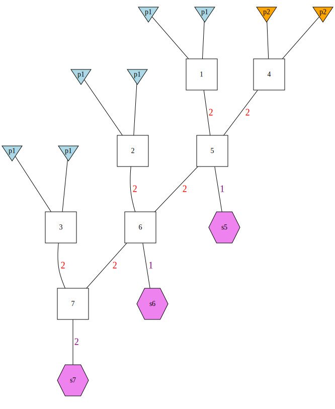

A first tutorial for gscramble
gscramble-tutorial_1.2.Rmd
library(gscramble)
library(tidyverse)
#> ── Attaching packages ─────────────────────────────────────── tidyverse 1.3.1 ──
#> ✔ ggplot2 3.3.6 ✔ purrr 0.3.4
#> ✔ tibble 3.1.7 ✔ dplyr 1.0.9
#> ✔ tidyr 1.2.0 ✔ stringr 1.4.0
#> ✔ readr 2.1.2 ✔ forcats 0.5.1
#> ── Conflicts ────────────────────────────────────────── tidyverse_conflicts() ──
#> ✖ dplyr::filter() masks stats::filter()
#> ✖ dplyr::lag() masks stats::lag()Input Data
gscramble operates only for diploid species. The main
functions in gscramble require that genetic data be
provided in R objects (matrices/tibbles/etc.) with particular
formatting. We describe the formats of those objects here. Later we
describe functions for reading data from PLINK format (and perhaps
others, in the future) into these necessary objects for
gscramble.
The main required objects (loosely aligning with .bed/.fam/.bim file structure of binary PLINK files) are:
- A matrix of genotype data. (
Geno) - A tibble of meta data about the individuals in the genotype data
(
I_meta) - A tibble of meta data about the markers in the genotype data
(
M_meta)
On top of those, if you want to simulate hybrid individuals according to a pedigree, you will need to provide
- A tibble that describes the rates of genetic recombination along the
chromosomes. (
RecRates) - A tibble that describes a pedigree of interest within which sections
of chromosomes are segregated down successive generations, which we call
a “genome simulation pedigree” (
GSP) - A tibble that translates the population specifiers in the pedigree
(i.e.,
GSP) with the population/group labels associated with the genetic data (i.e.,I_meta) for different hybridization replicates (RepPop)
Examples of these objects (which have been heavily downsampled to make them small enough to host on CRAN, illustrating 78 individuals genotyped at 100 loci distributed across 3 chromosomes [chr 12, 17, & 18] and sampled from 4 groups [Pop10, 2, 3, 4]) from a data set of invasive feral swine (Smyser et al. 2020; full dataset: https://datadryad.org/stash/dataset/doi:10.5061%2Fdryad.jsxksn05z) are included as data objects with the package. The following sections discuss each of these data inputs in detail.
Matrix of genotype data. Geno
The genotype data must be provided in a matrix. If there are \(N\) individuals and \(L\) loci in the diploid species, this
matrix has \(N\) rows and \(2L\) columns. Each locus gets two adjacent
columns (one allele in each column) and each individual gets one row.
For example, in the first row and first column Geno[1,1] is
the first allele for the first locus for the first individual. In the
first row and second column Geno[1,2] is the second allele
for the first locus for the first individual. In the first row and third
column Geno[1,3] is the first allele at the second locus
for the first individual, and so on.
Here is an example of data on the first 6 loci in the first 4
individuals from the package data Geno:
Geno[1:4, 1:12]
#> [,1] [,2] [,3] [,4] [,5] [,6] [,7] [,8] [,9] [,10] [,11] [,12]
#> [1,] "G" "G" "C" "C" "T" "T" "A" "A" "G" "G" "T" "T"
#> [2,] "G" "G" "C" "C" "T" "T" "A" "A" "G" "G" "T" "T"
#> [3,] "G" "G" "C" "C" "T" "T" "A" "A" "G" "G" "T" "T"
#> [4,] "G" "G" "C" "C" "T" "T" "A" "A" "G" "G" "T" "T"These data must be stored as a character Matrix.
Don’t pass in a matrix of integers. The alleles can be any characters
whatsoever. This allows the data to be microsatellites,
("112", "116", etc), or microhaplotypes
("ACCGA", "ACCTC", etc.), or SNPs
("A", "C", "G",
"T"), etc. If you do have a matrix of integers, named, for
example IntMat, you can coerce all the elements of that
matrix to be characters without losing the matrix shape of the data, by
doing this:
storage.mode(IntMat) <- "character"Missing genotype data must be denoted by the standard R missing data
specifier, NA. Don’t go around calling missing data
"-1" and expect it to work properly! Change those
"-1"’s to NAs, or they will be regarded as an
allelic type, rather than as missing data.If you do have missing data,
let’s say they are denoted as "-1", then you can change all
missing values to NAs using the following:
Geno[Geno == "-1"]<-NASince there are no "-1" or NAs in the
Geno dataset, nothing happens.
Individual meta data. I_meta
This is a tibble that gives information about the individuals whose
genotypes are in Geno. This can have many different columns
if you want to have them, but there must be at least two columns:
-
group: a column that gives the character name of the group/cluster/population that each individual is considered to be a part of. -
indiv: a column that gives the character ID of each individual.
The number of rows of this tibble should be exactly equal to the
number of rows on Geno and the order of
individuals in I_meta must correspond exactly to the order
of individuals in Geno.
Here is what the first few rows of the example data’s
I_meta look like:
head(I_meta)
#> # A tibble: 6 × 2
#> group indiv
#> <chr> <chr>
#> 1 Pop2 ID0033692
#> 2 Pop2 ID0014942
#> 3 Pop2 ID0014961
#> 4 Pop2 ID0016971
#> 5 Pop2 ID0016972
#> 6 Pop2 ID0017013Marker meta data. M_meta
This input is a tibble of information about the markers in the
Geno matrix. It can have a variety of columns in it, but it
is required to have three:
-
chrom: the character name of the chromosome upon which the marker occurs. For example,"1","X"of"Omy28", or as illustrated inM_metachr12, chr17, and chr18.
Importantly, if you are simulating physical linkage with recombination, then the names of the chromosomes in this file must correspond exactly to the names of the chromosomes inRecRates(see next section). -
pos: a numeric (integer or double) column giving the position of the marker (typically in base pairs, but it could be in arbitrary units that correspond to position units inRecRates), along the chromosome. These position values must be greater than 0. -
variant_id: a character vector of unique ID names for the markers. These should be globally unique, i.e., don’t have two markers on different chromosomes that are named the same thing.
There must be exactly half as many rows in M_meta as
there are columns in Geno, and the order of markers in
M_meta must correspond exactly to the order of markers in
the columns in Geno.
Here are the first few rows of the example data
M_meta:
head(M_meta)
#> # A tibble: 6 × 3
#> chrom pos variant_id
#> <chr> <dbl> <chr>
#> 1 12 4469057 WU_10.2_12_4469057
#> 2 12 5238225 ALGA0064411
#> 3 12 7394362 WU_10.2_12_7394362
#> 4 12 7651064 ASGA0090707
#> 5 12 8971475 WU_10.2_12_8971475
#> 6 12 11034660 WU_10.2_12_11034660Recombination rates. RecRates
This is a tibble that gives information about the rate of
recombinations in the genome. This is necessary if simulating linked
markers. It is not required in gscramble to know a
crossover rate nor a recombination rate between every adjacent pair of
markers (though if you have that information, you can provide it in
RecRates, [see below]). Rather, the rate of recombination
can be specified in terms of the per-meiosis probability of
recombination in a number of (preferably relatively short—for example,
one megabase or less) bins. RecRates is a tibble which is
required to have four columns:
-
chrom: the chromosome on which the bin occurs. Note that the chromosome nomenclature must match exactly that used inM_meta. -
chrom_len: the length of the chromosome. Yes, the value for each chromosome will typically be duplicated on each row occupied by thatchrom. -
start_pos: the starting position of the bin. This will typically be a position along the chromosome in base pairs, though this position can be in some other units, so long as it corresponds to the position used inM_meta. -
end_pos: the ending position of the bin. -
rec_prob: the per-meiosis probability of a recombination occurring in the bin.
There are some important notes:
- The start point of a bin should be 1 greater than the end point of the preceding bin.
- The positions of all the markers (in
M_meta) should be included amongst the bin intervals defined bystart_posandend_pos. Most crucially in this regard, the smalleststart_posshould be less than the smallestposinM_metaand the greatestend_posshould be greater than or equal to the largestposinM_meta. Otherwise, recombination might never be possible between some pairs of markers in the data set. - The chromosome length in
chrom_lenmust exceed the position of every marker on the chromosome inM_meta. If this is not the case then it would be possible that some markers would be dropped from the data set, possibly with unexpected or bad results. You can check for errors in this regard using the functioncheck_chrom_lengths().
head(RecRates)
#> # A tibble: 6 × 5
#> chrom chrom_len start_pos end_pos rec_prob
#> <chr> <dbl> <dbl> <dbl> <dbl>
#> 1 12 63582536 1 79501 0.000694
#> 2 12 63582536 79502 1573908 0.00131
#> 3 12 63582536 1573909 2097503 0.000554
#> 4 12 63582536 2097504 3308663 0.00557
#> 5 12 63582536 3308664 4021031 0.0179
#> 6 12 63582536 4021032 5026780 0.0115Genome Simulation Pedigree. GSP
The GSP is a specification of a pedigree within which
sections of chromosome will get segregated across successive generations
represented within the pedigree and is used to to guide sampling of
these chromosomal sections without replacement. This will allow us to
characterize/simulate hybrid individuals for the purpose of assessing
the power to classify individuals to hybrid classes of interest (i.e.,
F1s, F1BC1s, F2BC1s, etc.).
The GSP must be a tibble in which each individual has a
numeric identifier (from 1 up to the number of individuals in the
pedigree). Founders are listed directly (1…nFounders) whereas numbers
can represent more than one individual in successive generations (e.g.,
two F1 individuals sampled within the most basic pedigree illustrated
below are characterized as ‘3’). The founders’ parents are listed as NA
and non-founders have parents listed. Founders’ haplotypes must have
unique IDs and must originate from a specified population (typically
given in capital letters.) Individuals can be sampled from individuals
in the pedigree, and it is up to the user to indicate how many gametes
must be segregated to each individual (from each of its two parents) in
order to consume all the genetic material present among the
founders.
This probably sounds a little abstract, and, indeed, it is.
gscramble includes 15 basic GSPs (illustrated within the
object GSP_opts) that can be retreived by specifying the
types of individuals of interest with the function
create_GSP(). As we will illustrate below, you are not
restricted to these GSP configurations. These 15 specific GSP
configurations were of interest to the authors and are included to
illustrate how to structure GSP tibbles that may be of interest to
you.
To try to explain the GSP concept more fully, we will first draw a
picture of the most basic pedigree (the simulation of F1s created
through the hybridization of individuals from two population). We then
show the tibble representation of that same GSP and discuss the
structure of a GSP in light of those two pieces of information.

Now, for example, let’s say you are interested in simulating F1
hybrids for all pairwise combinations of populations (with the example
data Pop1, Pop2, Pop3, Pop4). F1s are symmetrical such that a Pop1-Pop2
hybrid is identical to a Pop2-Pop1 hybrid. Accordingly, we need to
specify the RepPop tibble to define which populations to
use in each replicate of the simulation:
Pattern = c("Pop1", "Pop2", "Pop1", "Pop3", "Pop1", "Pop4", "Pop2", "Pop3", "Pop2", "Pop4", "Pop3", "Pop1")
RepPopF1 <- as_tibble(data.frame(rep = rep(1:6, times = 1, each = 2),
pop = rep(c("p1", "p2"), times = 6), group = Pattern))
head(RepPopF1)
#> # A tibble: 6 × 3
#> rep pop group
#> <int> <chr> <chr>
#> 1 1 p1 Pop1
#> 2 1 p2 Pop2
#> 3 2 p1 Pop1
#> 4 2 p2 Pop3
#> 5 3 p1 Pop1
#> 6 3 p2 Pop4Next, we need to define the GSP in which we are using ‘p1’ and ‘p2’
in RepPop to represent Pop1 and Pop2.
gspF1 <- create_GSP(pop1 = "p1", pop2 = "p2", F1 = TRUE)
gspF1
#> # A tibble: 3 × 11
#> ind par1 par2 ipar1 ipar2 hap1 hap2 hpop1 hpop2 sample osample
#> <dbl> <dbl> <dbl> <dbl> <dbl> <chr> <chr> <chr> <chr> <chr> <dbl>
#> 1 1 NA NA NA NA 1a 1b p1 p1 NA NA
#> 2 2 NA NA NA NA 2a 2b p2 p2 NA NA
#> 3 3 1 2 2 2 NA NA NA NA s3 2Building upon this simplistic GSP, let’s build something a little
more ‘complex’ with F1s, F1BC1s, and F1BC2s using the built-in function
create_GSP().
gspComplex <- create_GSP(pop1 = "p1", pop2 = "p2", F1 = TRUE, F1B = TRUE, F1B2 = TRUE)
gspComplex
#> # A tibble: 7 × 11
#> ind par1 par2 ipar1 ipar2 hap1 hap2 hpop1 hpop2 sample osample
#> <dbl> <dbl> <dbl> <dbl> <dbl> <chr> <chr> <chr> <chr> <chr> <dbl>
#> 1 1 NA NA NA NA 1a 1b p1 p1 NA NA
#> 2 2 NA NA NA NA 2a 2b p1 p1 NA NA
#> 3 3 NA NA NA NA 3a 3b p1 p1 NA NA
#> 4 4 NA NA NA NA 4a 4b p2 p2 NA NA
#> 5 5 1 4 2 2 NA NA NA NA s5 1
#> 6 6 2 5 2 2 NA NA NA NA s6 1
#> 7 7 3 6 2 2 NA NA NA NA s7 2For this example, Pop1 is our population of interest. We are simulating Pop1-Pop2 F1s, then pairing those F1 individuals with Pop1 to generate backcrossed hybrids, which are different than Pop1-Pop2, backcrossed to Pop2 hybrids. Here is a picture of what that looks like:

Notice that backcrossed individuals are not symmetrical.
Now say we can simulate hybrid individuals between Pop1 and all other
populations using the RepPop file.
Pattern = c("Pop1", "Pop2", "Pop1", "Pop3", "Pop1", "Pop4")
RepPopComplex <- as_tibble(data.frame(rep = rep(1:3, times = 1, each = 2),
pop = rep(c("p1", "p2"), times = 3), group = Pattern))
RepPopComplex
#> # A tibble: 6 × 3
#> rep pop group
#> <int> <chr> <chr>
#> 1 1 p1 Pop1
#> 2 1 p2 Pop2
#> 3 2 p1 Pop1
#> 4 2 p2 Pop3
#> 5 3 p1 Pop1
#> 6 3 p2 Pop4If we are interested in Pop1-Pop2, backcrossed to Pop2 hybrids we can
use a RepPop file that looks like this:
Pattern = c("Pop2", "Pop1", "Pop3", "Pop1", "Pop4", "Pop1")
RepPopComplex2 <- as_tibble(data.frame(rep = rep(1:3, times = 1, each = 2),
pop = rep(c("p1", "p2"), times = 3), group = Pattern))
RepPopComplex2
#> # A tibble: 6 × 3
#> rep pop group
#> <int> <chr> <chr>
#> 1 1 p1 Pop2
#> 2 1 p2 Pop1
#> 3 2 p1 Pop3
#> 4 2 p2 Pop1
#> 5 3 p1 Pop4
#> 6 3 p2 Pop1We will go over more examples of how to define populations in
RepPop in the section “Mapping populations/collections to
founding populations. RepPop” of this tutorial.
In our previous examples, we specified an initial suite of GSPs that
were of interest, combining various configurations of F1s, F2s, F1BC1s,
and F1BC2s using the create_GSP() function. However, you
are not limited to these GSPs and may create your own.
Here are two illustrations of more complex patterns of hybridization:
The package data object GSP shows an example of a genome
simulation pedigree with 13 members. Here is a picture of what it looks
like:

You can produce this type of plot using the gsp2dot()
function in the ‘gscramble’ package, but it requires the installation of
the GraphViz dot software.
csv <- system.file("extdata/13-member-ped.csv", package = "gscramble")
gsp_tib <- readr::read_csv(csv)
paths <- gsp2dot(g = gsp_tib, path = "images/13-member-ped")
# now, get rid of the dot and png files
file.remove(paths[1:2])The tibble specification of that same GSP is printed here:
csv <- system.file("extdata/13-member-ped.csv", package = "gscramble")
readr::read_csv(csv)
#> Rows: 13 Columns: 11
#> ── Column specification ────────────────────────────────────────────────────────
#> Delimiter: ","
#> chr (5): hap1, hap2, hpop1, hpop2, sample
#> dbl (6): ind, par1, par2, ipar1, ipar2, osample
#>
#> ℹ Use `spec()` to retrieve the full column specification for this data.
#> ℹ Specify the column types or set `show_col_types = FALSE` to quiet this message.
#> # A tibble: 13 × 11
#> ind par1 par2 ipar1 ipar2 hap1 hap2 hpop1 hpop2 sample osample
#> <dbl> <dbl> <dbl> <dbl> <dbl> <chr> <chr> <chr> <chr> <chr> <dbl>
#> 1 1 NA NA NA NA 1a 1b A A NA NA
#> 2 2 NA NA NA NA 2a 2b A A NA NA
#> 3 3 NA NA NA NA 3a 3b B B NA NA
#> 4 4 NA NA NA NA 4a 4b A A NA NA
#> 5 5 NA NA NA NA 5a 5b B B NA NA
#> 6 6 NA NA NA NA 6a 6b B B NA NA
#> 7 7 2 3 2 2 NA NA NA NA s7 1
#> 8 8 4 5 2 2 NA NA NA NA s8 1
#> 9 9 1 7 1 1 NA NA NA NA NA NA
#> 10 10 7 8 1 1 NA NA NA NA s10 1
#> 11 11 8 6 1 1 NA NA NA NA NA NA
#> 12 12 9 11 2 2 NA NA NA NA s12 2
#> 13 13 1 6 1 1 NA NA NA NA s13 1A four-poplation GSP. gsp4
Or, alternatively, let’s say you are interested in patterns of hybridization that are not restricted to simply two populations.
For illustration, we will have another pedigree that represents an F1
between populations A and B then mating with an F1 from populations C
and D. The tibble is available in the package data object
gsp4, while the CSV file of it is available at:
system.file("extdata/gsp4.csv", package = "gscramble")Here is what it looks like:

Mapping populations/collections to founding populations.
RepPop
When you create a genomic simulation pedigree, you will typically
denote the populations that the founders come from with short names,
like “A” or “B”. However, the actual populations in your genotype data
set might be different. For example, in our example data in this R
package, we have groups of individuals given in I_meta.
Here we count up how many individuals in each of these
groups/populations/clusters there are:
I_meta %>%
count(group)
#> # A tibble: 4 × 2
#> group n
#> <chr> <int>
#> 1 Pop10 20
#> 2 Pop2 20
#> 3 Pop3 20
#> 4 Pop4 18You must use a tibble with columns rep,
pop, group, to indicate which of the founding
populations (“A”, “B”, etc.) correspond to the different groups (from
the group column in, for example, I_meta) in
your genotype data set. Because it is quite likely that you might wish
to iterate the segregation procedure multiple times in a single
simulation, you can specify that by doing multiple “reps” (replicates)
of the procedure.
An example might help. Suppose that we wish to do a simulation with
the pedigree in GSP (13 individuals, 6 of which are
founders: 3 from population “A” and 3 from population “B”). For the
first rep, we might want to map “A” to Pop2 and “B” to Pop3, and in the
second rep we might want to map “A” to Pop1, and “B” to Pop 4. (Note, at
this point, genetic material from 3 individuals from each of those
populations will have been “consumed” from each of these populations and
segregated, without replacement, into the samples from the genomic
simulation pedigree.)
The RepPop tibble that would specify this is given in
the package variable RepPop1:
RepPop1
#> # A tibble: 4 × 3
#> rep pop group
#> <int> <chr> <chr>
#> 1 1 A Pop2
#> 2 1 B Pop3
#> 3 2 A Pop10
#> 4 2 B Pop4For another example, imagine that we want to do three replicates
creating the admixed individuals sampled from the genomic permutation
pedigree, gsp4. The RepPop tibble for that might look like
this:
RepPop4
#> # A tibble: 12 × 3
#> rep pop group
#> <int> <chr> <chr>
#> 1 1 A Pop2
#> 2 1 B Pop3
#> 3 1 C Pop4
#> 4 1 D Pop10
#> 5 2 A Pop2
#> 6 2 B Pop3
#> 7 2 C Pop4
#> 8 2 D Pop10
#> 9 3 A Pop2
#> 10 3 B Pop3
#> 11 3 C Pop4
#> 12 3 D Pop10Note that this request will consume 1 individual from each of populations 2, 3, 4, and 10 (which are mapped to A, B, C, and D, respectively), and will create 4 simulated, admixed, and sampled individuals.
Segregating Chunks of Genome Without Replacement
Now that we have been through all the input data formats, we can use
them to segregate chunks of chromosome. Note that this first part does
not require the genotypes. We are just simulating big chunks of
chromosome dropping through the pedigrees. The function used for this is
segregate(). The needed inputs are:
- 1 or more genomic permuation pedigrees (like
GSPorgsp4) - A RepPop tibble to go with each genomic permutation pedigree
- The recombination probabilities, like
RecRates.
The final wrinkle here is that we have set this up so that you can
specify, in a single simulation, that replicates from multiple genomic
permutation pedigrees can be requested. This is done by passing
segregate() a tibble that has a list column named
gpp that holds the genomic permutation pedigrees, and a
parallel column named reppop that holds the RepPop tibbles
for each of those genomic permutation pedigrees. Let’s see that by an
example, building on the two examples above:
Input_tibble <- tibble(
gpp = list(GSP, gsp4),
reppop = list(RepPop1, RepPop4)
)
# here is what that input object looks like:
Input_tibble
#> # A tibble: 2 × 2
#> gpp reppop
#> <list> <list>
#> 1 <tibble [13 × 11]> <tibble [4 × 3]>
#> 2 <tibble [7 × 11]> <tibble [12 × 3]>The segregation requested is then carried out, using the
recombination rates in RecRates like this:
The output from that is a big tibble. Each row represents one segment
of genetic material amongst the sampled individuals from the genomic
permutation pedigrees. Each segment exists in one of the samples
(samp_index) from a sampled individual with a
ped_sample_id on a given gpp (the index giving
the row of the request input tibble) in a given rep within
the individual. Further, it is on one of two gametes
(gamete_index) that segregated into the individual, and it
came from a certain founding population (pop_origin) that
corresponds to the named groups in the genotype file
(group_origin). And, of course, the segment occupies the
space from start to end on a chromosome
chrom. Finally, the index of the founder haplotype on the
given gpp that this segement descended from is given in
rs_founder_haplotype which is short for “rep-specific
founder haplotype”. This final piece of information is crucial for
segregating variation from the individuals in the Geno file
onto these segments. We take that up in the next section, but first we
will look at the results that we have here.
First, here is a listing of the top of the Segments we
produced above.
Segments
#> # A tibble: 286 × 14
#> chrom_f gpp rep chrom ped_sample_id samp_index gamete_index
#> <fct> <int> <int> <chr> <chr> <int> <dbl>
#> 1 12 1 1 12 10 1 1
#> 2 12 1 1 12 10 1 1
#> 3 17 1 1 17 10 1 1
#> 4 17 1 1 17 10 1 1
#> 5 18 1 1 18 10 1 1
#> 6 18 1 1 18 10 1 1
#> 7 18 1 1 18 10 1 1
#> 8 18 1 1 18 10 1 1
#> 9 12 1 1 12 10 1 2
#> 10 12 1 1 12 10 1 2
#> # … with 276 more rows, and 7 more variables: gamete_segments <list>,
#> # pop_origin <chr>, rs_founder_haplo <int>, start <dbl>, end <dbl>,
#> # group_origin <chr>, sim_level_founder_haplo <int>The table is a little wide, so we will show the first half of the columns and then the second half here.
First half
Segments %>%
select(gpp:pop_origin)
#> # A tibble: 286 × 8
#> gpp rep chrom ped_sample_id samp_index gamete_index gamete_segments
#> <int> <int> <chr> <chr> <int> <dbl> <list>
#> 1 1 1 12 10 1 1 <dbl [3]>
#> 2 1 1 12 10 1 1 <dbl [3]>
#> 3 1 1 17 10 1 1 <dbl [3]>
#> 4 1 1 17 10 1 1 <dbl [3]>
#> 5 1 1 18 10 1 1 <dbl [5]>
#> 6 1 1 18 10 1 1 <dbl [5]>
#> 7 1 1 18 10 1 1 <dbl [5]>
#> 8 1 1 18 10 1 1 <dbl [5]>
#> 9 1 1 12 10 1 2 <dbl [5]>
#> 10 1 1 12 10 1 2 <dbl [5]>
#> # … with 276 more rows, and 1 more variable: pop_origin <chr>Second half
Segments %>%
select(rs_founder_haplo:group_origin)
#> # A tibble: 286 × 4
#> rs_founder_haplo start end group_origin
#> <int> <dbl> <dbl> <chr>
#> 1 3 0 4888302. Pop2
#> 2 2 4888302. 63582536 Pop3
#> 3 2 0 64743108. Pop3
#> 4 4 64743108. 69302804 Pop2
#> 5 4 0 4583912. Pop2
#> 6 2 4583912. 9900731. Pop3
#> 7 4 9900731. 56967240. Pop2
#> 8 2 56967240. 61201108 Pop3
#> 9 6 0 9808646. Pop2
#> 10 4 9808646. 50453258. Pop3
#> # … with 276 more rowsVisualizing those chunks of genome
We have a convenience function called
plot_simulated_chromosome_segments() that let’s you quickly
visualize the results. Let’s try it here:
g <- plot_simulated_chromomsome_segments(Segments, RecRates)
g
Simulating alleles at markers within segments
There are a few separate steps required to make this happen, and they
all occur within the function segments2markers(). The steps
that happen are:
- The genotype matrix is reorganized according to the
groupspecification in theI_meta, so that individuals in the same group are adjacent to one another in the genotype matrix. - The alleles carried by the individuals within each population are permuted.
- The chromosomes carrying these permuted alleles from
Genoare mapped to the chromosomes carried by the founders in the simulation performed bysegregate(). - The alleles on the founder chromosomes are propagated to the descendant segments in the individuals sampled from the GSP.
- Missing data is dealt with. (If a site has one gene copy missing after the permutation and mapping described above, the other gene copy must be declared missing, as well).
- The output genotypes are formatted for return, along with some information about the true admixture proportions of each individual.
The input to segments2markers() is:
- A tibble of segments, like that returned from
segments(). This is the variableSegmentsdefined above in this vignette example, - The individual meta data,
- The marker meta data,
- The genotype data.
We invoke it like this:
Markers <- segments2markers(
Segs = Segments,
Im = I_meta,
Mm = M_meta,
G = Geno
)The output is a list of three components:
-
$ret_genois an N x 2L matrix of returned genotypes. The two alleles at each locus are in two adjacent columns.dim(Markers$ret_geno) #> [1] 78 200# genotypes of the first 10 individuals at the first 3 markers Markers$ret_geno[1:10, 1:6] #> [,1] [,2] [,3] [,4] [,5] [,6] #> [1,] "G" "G" "C" "C" "T" "T" #> [2,] "G" "G" "C" "C" "T" "T" #> [3,] "G" "G" "C" "C" "T" "T" #> [4,] "G" "G" "C" "C" "T" "T" #> [5,] "G" "G" "C" "C" "T" "T" #> [6,] "G" "G" "C" "C" "C" "T" #> [7,] "G" "G" "C" "C" "T" "T" #> [8,] "G" "G" "C" "C" "T" "C" #> [9,] "G" "A" "C" "T" "C" "C" #> [10,] "G" "A" "C" "C" "C" "C" -
$ret_ids: a tibble with IDs of the individuals corresponding to the rows in theret_genomatrix. There are two columns:groupandindiv. The first rows include the samples from the GSP. Their group isped_hybs(meaning “sampled hybrids from the pedigree”) and their IDs are in theindivcolumn in the format of anh-followed by a string with replaced values of:gpp-rep-ped_sample_id-samp_index-matrix_row. Those are (they need explaining):-
rep: -
ped: -
sample_id: -
samp_index: -
matrix_row:
After the individual hybrid samples from the pedigree, there are rows of all the remaining individuals whose genotypes after permutation were not involved as founders in the segregation simulation. These are given the name
permed+ their original IDs. The group that each belongs to is in the group column. Things are organized this way so that the whole genotype can easily be passed to ADMIXTURE and the admixture fractions of the hybrid individuals estimated using thepermed_*individuals as samples of known cluster/group origin. -
$hyb_Qs: A tibble with the true admixture fraction (calculated as the total proportion of genome length from each group) of each simulated hybrid.
Back to plink format
# note, we are only using a temporary file here for the output
# because this is in the vignette of an R package. You, yourself,
# will likely want to write the results to a directory in your
# home directory somewhere, like `prefix = ~/my_stuff/gscram-sim-1`, etc.
tfile <- tempfile()
gscramble2plink(
I_meta = Markers$ret_ids,
M_meta = M_meta,
Geno = Markers$ret_geno,
prefix = tfile
)
#> pedfile written to /var/folders/xg/mz_qt7q54yv_hwzvhskwx2c00000gp/T//RtmpX3FLGV/file112ae46ab53.ped
#> mapfile written to /var/folders/xg/mz_qt7q54yv_hwzvhskwx2c00000gp/T//RtmpX3FLGV/file112ae46ab53.map
#> [1] TRUE